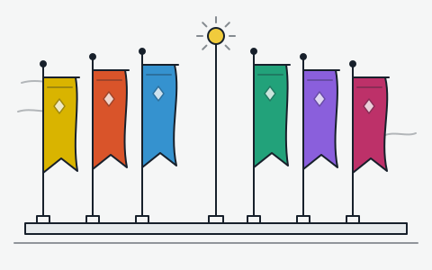

공명자
솔라리스-3를 함께 누비는 공명자들을 속성별로 모았어요. 각자 어떤 사람인지, 전투에서는 어떻게 쓰는지 정리했어요.

공명자 목록
-
방랑자
기억을 잃은 채 깨어난 이야기의 주인공이에요. 여정을 이어 가며 여러 속성의 힘을 각성해요.
운용 스토리로 얻는 공명자라서 초반 파티의 중심을 맡기 좋아요.
-
금희
금주를 이끄는 젊은 수장이에요. 온화하지만 도시를 지키려는 의지는 누구보다 강해요.
운용 힘을 차곡차곡 쌓았다가 큰 한 방으로 터뜨리는 구조라, 동료와의 교체 타이밍이 중요해요.
-
장리
금주의 수장을 보좌하는 책사예요. 바둑을 두듯 전장의 흐름을 설계해요.
운용 용융 메인 딜러의 피해를 끌어올려 주는 역할로 자주 쓰여요.
-
기염
금주를 지키는 군을 이끄는 장군이에요. 창을 휘두르는 호쾌한 연속 공격이 특징이에요.
운용 공명 해방 상태에서 몰아치는 강공격이 핵심이라, 에너지를 모아 두고 진입해요.
-
음림
꼭두각시 인형을 조종해 싸우는 정보원이에요. 속내를 쉽게 드러내지 않아요.
운용 적에게 표식을 남겨 추가 피해를 주고, 전도 딜러와 특히 잘 맞아요.
-
카카루
악명 높은 용병단을 이끄는 우두머리예요. 거칠어 보여도 맡은 일은 확실히 끝내요.
운용 해방 뒤에 이어지는 마무리 공격으로 폭발적인 피해를 내요.
-
앙코
양 인형 친구들과 함께 다니는 밝은 소녀예요. 귀여운 모습과 달리 화력은 불꽃 같아요.
운용 해방 중에는 일반 공격이 강해지니 그 시간을 최대한 활용해요.
-
벨리나
식물을 사랑하는 상냥한 식물학자예요. 꽃과 덩굴의 힘으로 동료를 치유해요.
운용 회복과 파티 전체 피해 증가를 함께 챙길 수 있어서 어느 파티에나 잘 어울려요.
-
능양
사자춤을 추는 활기찬 소년이에요. 공중을 누비는 발차기 공격이 특징이에요.
운용 공중에 오래 머물수록 피해가 커져요.
-
감심
도를 닦는 무술가예요. 기의 흐름을 다루어 보호막을 만들고 적을 끌어모아요.
운용 보호막으로 파티를 지키고, 적을 한데 모아 광역 공격을 도와요.
-
카멜리아
꽃처럼 아름답지만 위험한 분위기를 풍기는 수수께끼의 인물이에요.
운용 필드에 오래 머물며 빠른 연속 공격을 퍼붓는 주력 딜러예요.
-
카를로타
리나시타 명문가 출신의 아가씨예요. 우아한 몸짓으로 쌍권총을 다뤄요.
운용 공명 스킬 피해 비중이 높아서, 이를 강화해 주는 서포터와 잘 맞아요.
-
파수인
흑해안을 오랫동안 지켜 온 존재예요. 방랑자와 깊은 인연이 있어요.
운용 회복과 치명타 관련 강화를 함께 주는 든든한 서포터예요.
-
상리요
연구에 몰두하는 학자예요. 기계 팔을 활용한 정밀한 공격이 특기예요.
운용 공명 해방 상태에서 강력한 연계를 넣기 때문에 해방 타이밍이 중요해요.
-
절지
붓으로 그린 그림을 현실로 불러내는 화가예요. 조용하고 수줍음이 많아요.
운용 그림 속 생물이 추가 공격을 넣으며 메인 딜러를 도와요.
-
페비
리나시타의 신앙 공동체에서 자란 소녀예요. 맑은 마음으로 빛을 다뤄요.
운용 회절 파티에서 지속 피해를 쌓아 주는 역할로 쓰여요.


설명은 팬이 정리한 요약이에요. 정확한 성능은 게임 안의 정보를 확인해 주세요.